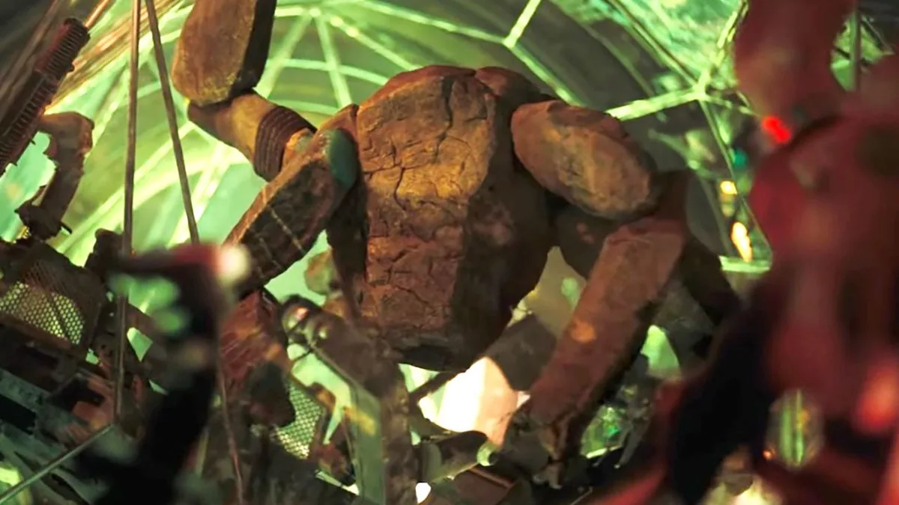

Ryland Grace est un scientifique qui se retrouve au centre d’une mission spatiale très importante.
Il se réveille dans un vaisseau sans se souvenir de son passé et doit rapidement comprendre la situation.
Son objectif est de trouver une solution à la menace qui met en danger la Terre.
Rocky est une créature extraterrestre que Ryland rencontre pendant sa mission.
Malgré leurs différences, ils réussissent à communiquer et à travailler ensemble.
Leur collaboration devient essentielle pour trouver une solution à la menace qui touche leurs deux mondes.
